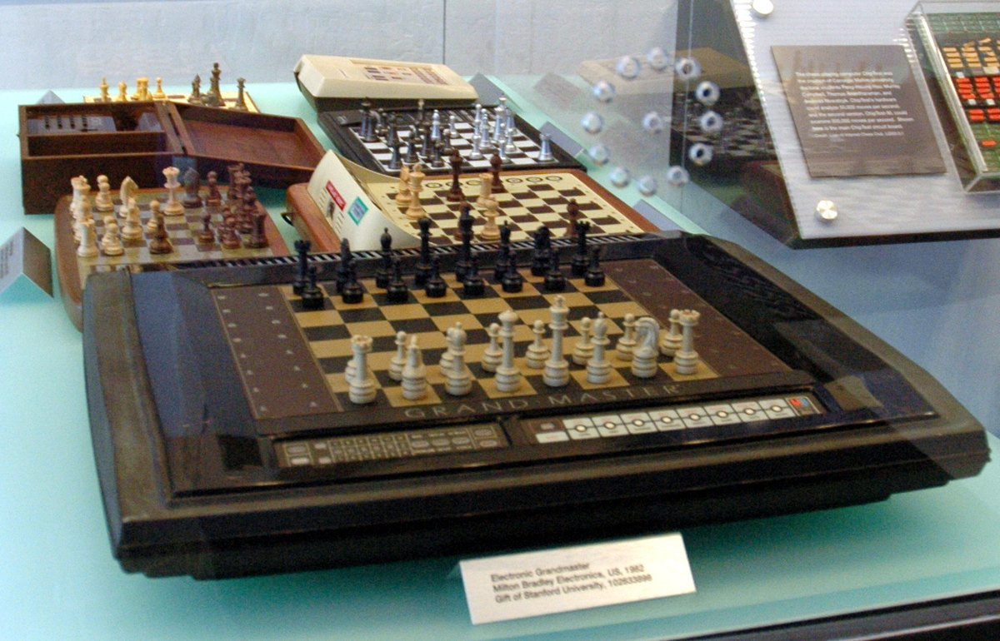

Milton Bradley Grandmaster (Phantom / Milton)
A robot chess computer whose invisible under-board X-Y plotter lifts magnetic pieces and moves them 'by magic'

Overview
The Milton Bradley Grandmaster is a robot dedicated chess computer sold under three names — Grandmaster in the United States, Phantom in the United Kingdom, and Milton in Germany, the Netherlands and France. Its interaction is gloriously physical: the board is a touch sensory board that senses where you place each piece, and the machine replies by physically moving its own magnetic pieces using an invisible X-Y-plotter mechanism beneath the board. Drive belts pull a solenoid up and down two metal rods in the x and y axes, enabling it to pick up individual magnetic pieces and drag them to their destination — all hidden, so from the player's view the computer's pieces simply glide across the board "by magic," with no visible arm. Captured pieces are carried aside to side trays.
The chess program and the software controlling the electromagnetic mover were developed by Intelligent Software; according to the Schachcomputer.info Wiki the 6502 16 KiB program was written by Mark Taylor and was similar to that of the Chess Champion Mark V. The Milton Bradleys were in production before the end of 1982 and in shops early 1983. Later in the 1980s Fidelity Electronics bought the rights to the Phantom and released its own follow-up (the Fidelity Phantom, with a program by Dan and Kathe Spracklen).
### The invisible mover
The defining interaction is the under-board X-Y plotter. Instead of a visible robot arm (like the Novag Robot Adversary's gripper) the Grandmaster hides its actuator entirely: belts pull a solenoid along two perpendicular rods beneath a magnetized touch surface, so the computer's pieces are lifted and dragged invisibly. To the human player the machine's move "just happens" — the piece slides to its destination with no mechanical limb in sight, the closest an 1980s consumer toy got to a stage-magic performance.
### Sensing and demonstrating
The board is a pressure/touch sensory board, so the player inputs moves by physically pressing pieces onto squares — no coordinates or keypad. Because the mover is a genuine actuator it can also demonstrate the full set of legal moves for any piece by physically moving it around the board, a "show, don't tell" interface for a beginner.
### Three names, one machine
The same device was sold as Grandmaster (US), Phantom (UK) and Milton (Germany/Netherlands/France), each branded by Milton Bradley. Later Fidelity acquired the Phantom rights and produced the Fidelity Phantom with Spracklen software, extending the lineage.
Deep dive
Team & pioneers
- Milton Bradley International Inc. Manufacturer and brand.
- Intelligent Software. Developed the chess program and the software driving the electromagnetic mover.
- Mark Taylor. Reported author of the 6502 16 KiB chess program (per Schachcomputer.info Wiki).